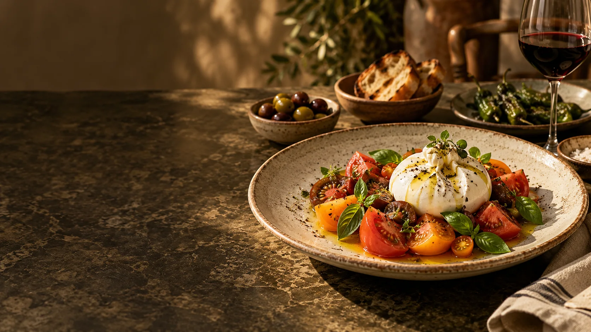

Burrata de temporada
14,50 €Tomates maduros, albahaca fresca, aceite de oliva virgen extra y pan crujiente.
Vegetariano
Una mesa para compartir
Ingredientes de temporada, recetas honestas y tiempo para disfrutarlas. Descubre nuestra carta de inspiración mediterránea.
Explorar la cartaPlatos que invitan a quedarse. Sabores reconocibles, producto cuidado y pequeñas sorpresas en cada bocado.